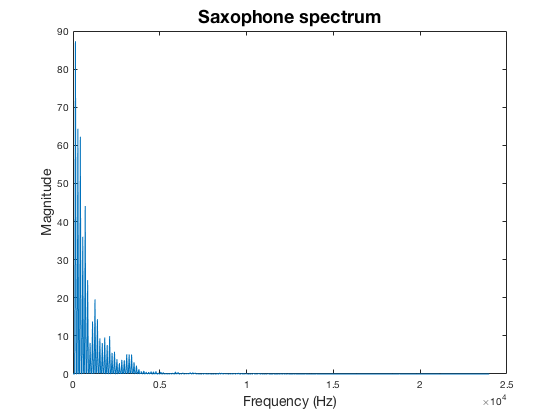
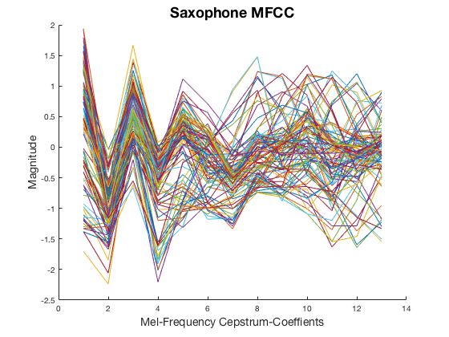
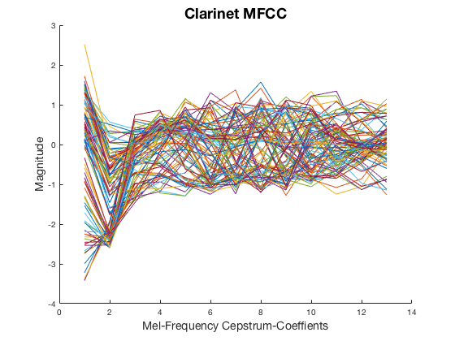
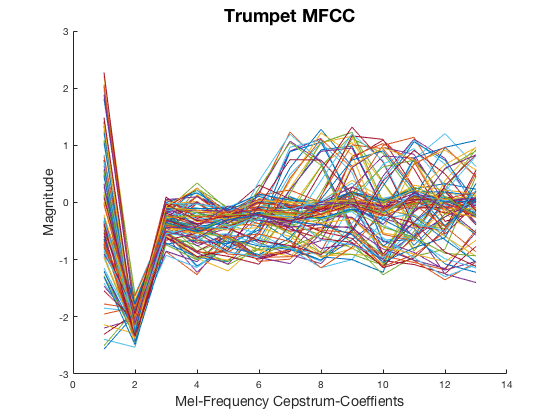
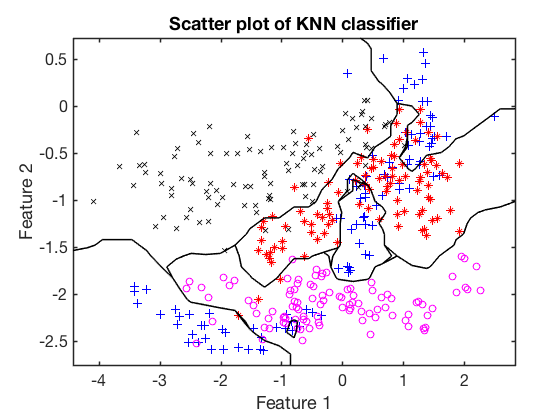
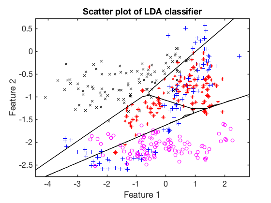
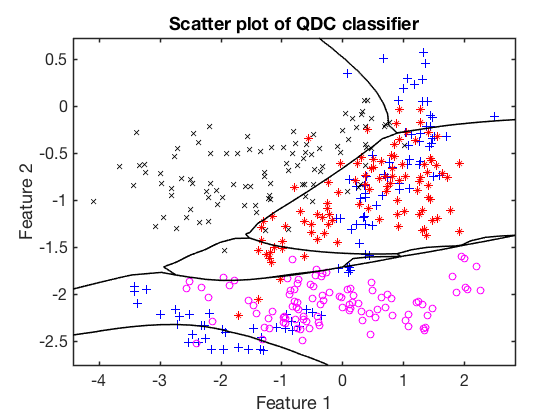

Contents
Instrument classification
I want to see how well instruments are recognitized by using the MFCC Classification of saxophone, clarinet, trumpet and violin.
Setup with window size, hop size, and file paths
clear; clc; close all; N = 2^10; hop = N/2; sr = 48000; filepathsax = 'SMSAdata/sax/'; filepathvio = 'SMSAdata/violin/'; filepathcla = 'SMSAdata/clarinet/'; filepathtru = 'SMSAdata/trumpet/'; pathname = dir('Instrument-Recognition/SMSAdata/sax'); fileIndex = find(~[pathname.isdir]); fileIndex = fileIndex(2:end); for i = 1:length(fileIndex) fileName(i,:) = pathname(fileIndex(i)).name; end % Store triangular filter in T T = triFilterBank(N, sr); coef = 13; dataAmount = 100; instrumentAmount = 4;
Saxophone
get MFCC from the sound files and store them in saxdata
saxdata = []; saxID = 'sax'; figure; hold on; for i = 1:dataAmount [s, ~] = audioread([filepathsax fileName(i, :)]); mfcc = getMFCC(s, N, T, coef); saxdata(i,:) = mfcc; plot(saxdata(i,:)) end title('Saxophone MFCC','FontSize',18) ylabel('Magnitude','FontSize',14) xlabel('Mel-Frequency Cepstrum-Coeffients','FontSize',14) hold off;
Clarinet
get MFCC from the sound files and store them in clarinetdata
clarinetdata = []; claID = 'cla'; figure; hold on; for i = 1:dataAmount [s, ~] = audioread([filepathcla fileName(i, :)]); mfcc = getMFCC(s, N, T, coef); clarinetdata(i,:) = [mfcc]; plot(clarinetdata(i,:)) end title('Clarinet MFCC','FontSize',18) ylabel('Magnitude','FontSize',14) xlabel('Mel-Frequency Cepstrum-Coeffients','FontSize',14) hold off;
Trumpet
get MFCC from the sound files and store them in trumpetdata
trumpetdata = []; truID = 'tru'; figure; hold on; for i = 1:dataAmount [s, ~] = audioread([filepathtru fileName(i, :)]); mfcc = getMFCC(s, N, T, coef); trumpetdata(i,:) = [mfcc]; plot(trumpetdata(i,:)) end title('Trumpet MFCC','FontSize',18) ylabel('Magnitude','FontSize',14) xlabel('Mel-Frequency Cepstrum-Coeffients','FontSize',14) hold off;
Violin
get MFCC from the sound files and store them in violindata
violindata = []; vioID = 'vio'; figure; hold on; for i = 1:dataAmount [s, ~] = audioread([filepathvio fileName(i, :)]); mfcc = getMFCC(s, N, T, coef); violindata(i,:) = [mfcc]; plot(violindata(i,:)) end title('Violin MFCC','FontSize',18) ylabel('Magnitude','FontSize',14) xlabel('Mel-Frequency Cepstrum-Coeffients','FontSize',14) hold off;
Build labels and dataset
labels = []; for i = 1:dataAmount*instrumentAmount if i < dataAmount+1 labels = [labels; saxID]; elseif i < dataAmount*2+1 labels = [labels; claID]; elseif i < dataAmount*3+1 labels = [labels; truID]; elseif i < dataAmount*4+1 labels = [labels; vioID]; end end % Data X X = [saxdata; clarinetdata; trumpetdata; violindata];
PRTOOLS
addpath('Toolboxes/prtools') warning('off','all'); prwarning(0); prwaitbar off; z = prdataset(X, labels);
figure scatterd(z) title('First 2 Mel-Frequency Cepstrum-Coeffients','FontSize',18)
Classification
% generate test and training indicies with respect to the class frequencies part = cvpartition(labels,'HoldOut',0.1); % data divided into 10% test and 90% traning % Make a training and testing pr data set pr_X_tr = prdataset(X(part.training,:), labels(part.training)); pr_X_tst = prdataset(X(part.test, :), labels(part.test));
Train classifiers parametric classifiers
pr_nmsc = nmsc(pr_X_tr); % minimum distance classifier - nmsc nmsc_w = pr_X_tst * pr_nmsc; [C_nmsc, r_nmsc] = confmat(nmsc_w); disp('Confusion matrix for minimum distance classifier') confmat(nmsc_w) disp('------------------------------------------------------------------')
Confusion matrix for minimum distance classifier True | Estimated Labels Labels | c s t v | Totals --------|----------------------------|------- c | 3 1 5 1 | 10 s | 0 4 4 2 | 10 t | 0 0 10 0 | 10 v | 2 1 0 7 | 10 --------|----------------------------|------- Totals | 5 6 19 10 | 40 ------------------------------------------------------------------
pr_ldc = ldc(pr_X_tr); % linear discriminant analysis - ldc % Linear Discriminant Analysis ldc_w = pr_X_tst * pr_ldc; [C_ldc, r_ldc] = confmat(ldc_w); disp('Confusion matrix for linear discriminant analysis classifier') confmat(ldc_w) disp('------------------------------------------------------------------')
Confusion matrix for linear discriminant analysis classifier True | Estimated Labels Labels | c s t v | Totals --------|----------------------------|------- c | 10 0 0 0 | 10 s | 0 10 0 0 | 10 t | 0 0 10 0 | 10 v | 1 0 0 9 | 10 --------|----------------------------|------- Totals | 11 10 10 9 | 40 ------------------------------------------------------------------
pr_qdc = qdc(pr_X_tr); % quadratic discriminant analysis - qdc % Quadratic Discriminant Analysis qdc_w = pr_X_tst * pr_qdc; [C_qdc, r_qdc] = confmat(qdc_w); disp('Confusion matrix for quadratic discriminant analysis classifier') confmat(qdc_w) disp('------------------------------------------------------------------')
Confusion matrix for quadratic discriminant analysis classifier True | Estimated Labels Labels | c s t v | Totals --------|----------------------------|------- c | 10 0 0 0 | 10 s | 0 10 0 0 | 10 t | 0 0 10 0 | 10 v | 0 0 0 10 | 10 --------|----------------------------|------- Totals | 10 10 10 10 | 40 ------------------------------------------------------------------
non-parametric classifiers
[pr_knn,nr_nn_used] = knnc(pr_X_tr); % k-nearest neighbor classifier - knnc % K-Nearest Neighbor knn_w = pr_X_tst * pr_knn; [C_knn, r_knn] = confmat(knn_w); disp('Confusion matrix for k-nearest neighbor classifier') confmat(knn_w) % k-NN might be subject to overfitting if the number of neighbors is too low % The knnc classifier calculates the optimal amount of k fprintf('Number of k''s in k-nearest neighbors classifier: %1.f\n', nr_nn_used) disp('------------------------------------------------------------------')
Confusion matrix for k-nearest neighbor classifier True | Estimated Labels Labels | c s t v | Totals --------|----------------------------|------- c | 10 0 0 0 | 10 s | 0 9 0 1 | 10 t | 0 0 10 0 | 10 v | 0 0 0 10 | 10 --------|----------------------------|------- Totals | 10 9 10 11 | 40 Number of k's in k-nearest neighbors classifier: 1 ------------------------------------------------------------------
Accuracy of Classifiers
Test the classifiers apply classifier on test data and calculate confusion matrix
% Table of classification errors Data_Class_Accuracy = 100*[1-r_nmsc/part.TestSize; 1-r_ldc/part.TestSize; 1-r_qdc/part.TestSize; 1-r_knn/part.TestSize;]; Classification_Errors = [r_nmsc; r_ldc; r_qdc; r_knn;]; c_names = {'MDC'; 'LDA '; 'QDA '; 'k-NN ';}; disp(table(Classification_Errors, Data_Class_Accuracy, 'RowNames',c_names))
Classification_Errors Data_Class_Accuracy
_____________________ ___________________
MDC 16 60
LDA 1 97.5
QDA 0 100
k-NN 1 97.5
Plot classifiers in 2D
close all; figure plot_feature = [1 2]; plot_knn = knnc(z(:,plot_feature)); % KNN scatterd(z(:,plot_feature)); hold on; plotc(plot_knn); title('Scatter plot of KNN classifier') figure plot_ldc = ldc(z(:,plot_feature)); % ldc scatterd(z(:,plot_feature)); hold on; plotc(plot_ldc) title('Scatter plot of LDA classifier') figure plot_qdc = qdc(z(:,plot_feature)); % qdc scatterd(z(:,plot_feature)); hold on; plotc(plot_qdc); title('Scatter plot of QDC classifier') 
Cross-validation with KNN
close all part = cvpartition(labels,'KFold',10); % data divided into 10% test and 90% traning cMat = []; for i = 1:10 pr_X_tr = prdataset(X(part.training(i),:), labels(part.training(i))); pr_X_tst = prdataset(X(part.test(i), :), labels(part.test(i))); [pr_knn,nr_nn_used] = knnc(pr_X_tr,3); % k-nearest neighbor classifier - knnc % K-Nearest Neighbor knn_w = pr_X_tst * pr_knn; [C, ~] = confmat(knn_w); if(isempty(cMat)) cMat = C; else for j = 1:size(C,1) for p = 1:size(C,2) cMat(j,p) = cMat(j,p) + C(j,p); end end end % get accuracy, correct/Total accuracy(i,:) = sum(diag(C))/sum(sum(C)); end % Average confusion matrix rownames = {'clarinet'; 'sax'; 'trumpet'; 'violin'}; avgMat = (cMat/10)/10; clarinet = avgMat(:,1); sax = avgMat(:,2); trumpet = avgMat(:,3); violin = avgMat(:,4); table(clarinet, sax, trumpet, violin, 'RowNames', rownames) % average accuracy meanAccuracy = mean(accuracy)
ans =
4×4 table
clarinet sax trumpet violin
________ ____ _______ ______
clarinet 0.99 0.01 0 0
sax 0.05 0.91 0.02 0.02
trumpet 0 0 1 0
violin 0.02 0 0.01 0.97
meanAccuracy =
0.9675
Cosine similarity between instruments
cosdist = @(x,y) x'*y/(norm(x)*norm(y)); mSax = mean(saxdata',2); mClarinet = mean(clarinetdata',2); mTrumpet = mean(trumpetdata',2); mViolin = mean(violindata',2); % [saxdata; clarinetdata; trumpetdata; violindata]; comparison = [cosdist(mSax,mSax) cosdist(mSax,mClarinet) cosdist(mSax,mTrumpet) cosdist(mSax,mViolin); ... cosdist(mClarinet, mSax), cosdist(mClarinet, mClarinet) cosdist(mClarinet, mTrumpet) cosdist(mClarinet, mViolin); ... cosdist(mTrumpet, mSax) cosdist(mTrumpet, mClarinet) cosdist(mTrumpet, mTrumpet) cosdist(mTrumpet, mViolin); ... cosdist(mViolin, mSax) cosdist(mViolin, mClarinet) cosdist(mViolin, mTrumpet) cosdist(mViolin, mViolin)]; imagesc(comparison) set(gca,'XTick',[1 2 3 4],'XTickLabel',{'Saxophone', 'Clarinet', 'Trumpet','Violin'}) set(gca,'YTick',[1 2 3 4],'YTickLabel',{'Saxophone', 'Clarinet', 'Trumpet','Violin'}) title('Cosine Distance Between Instruments', 'FontSize',18) colorbar